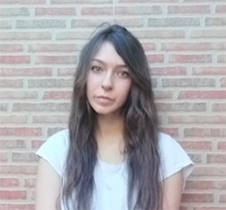
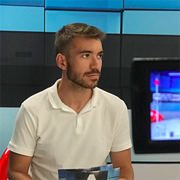
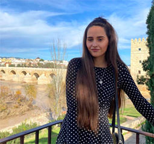
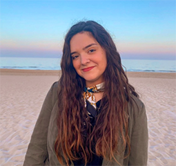

EQUIPO DE SPORTHERAS
"SI NO VAS POR TODO, ¿ENTONCES PARA QUÉ VAS?" - JOE NAMATH
Historia
Si has llegado hasta aquí es que, o tienes mucho tiempo libre o hemos hecho un buen trabajo y quieres conocernos. El proyecto de SPORTHERAS surgió a partir de la afición por el deporte y la salud de cinco estudiantes del grado de periodismo de la Universidad Miguel Hernández (UMH). Cada uno de nosotros ha complementado ese entusiasmo por el deporte con el previo aprendizaje de estos años. Quisimos proyectar algo nuevo y salió la idea de hablar sobre los deportes de equipo y su importancia, de explicar el recorrido del periodismo por el deporte y sobre todo de darle un hueco especial a las mujeres y su lucha en el mundo deportivo. De esto último nació el nombre, en la Antigua Grecia, las mujeres organizaron sus propios Juegos Olímpicos, llamados Juegos Heros en honor a la diosa Hera. Cabe destacar que la llama olímpica descansa en el templo de Hera, lugar en el que cada cuatro años se enciende la antorcha que comienza el camino hacia la ciudad sede de los Juegos Olímpicos.
TERESA ORTEGA BRAZÁLEZ
Teresa se encarga del ámbito de actualidad, abarcando la lucha de las mujeres en el deporte. Además, como periodistas hemos querido tratar el papel del periodista deportivo. El principal motivo que guió la elección del tema de este trabajo fue la pasión personal por los deportes y la constatación de la escasa presencia de mujeres en el mundo deportivo. Los medios de comunicación contribuyen a la perpetuación de las formas jerárquicas de las diferencias de género a través de los intereses que predominan en el capitalismo y el patriarcado.
ESTEBAN SAN CANUTO PELECHANO
Esteban es estudiante de Periodismo de la UMH, con una clara vocación profesional orientada a la comunicación audiovisual y corporativa. Él se encarga de investigar, recabar información y redactar la sección sobre el material deportivo. Además de ser un amante del mundo audiovisual, también es un fiel seguidor del mundo deportivo. La natación así como el crossfit son dos de los deportes que más ha practicado en los últimos años. En cuanto a su experiencia profesional, Esteban ha ejercido numerosos y diferentes trabajos. La hostelería y el sector social son dos de los trabajos que más ha desempeñado, como camarero en un restaurante e integrador social en un centro de menores.
ALBA VÁZQUEZ COLLADO
Teresa se encarga de la parte de noticias.Las barras son otro de los equipos de entrenamiento más vendidos y utilizados en el mundo. Diferentes disciplinas hacen uso de este material; desde la halterifilia, el levantamiento de potencias hasta el atletismo de fuerza. Este accesorio está compuesto, principalmente, por una barra de metal que permite la incorporación de pesos, que tienen forma de discos. El tamaño de las mismas suelen ser diferentes, oscilando los 1,2 metros y los 2,1. Podemos encontrar una gran variedad que se adaptan a todas las formas físicas; desde barras masculinas hasta femeninas. Pese a que las barras ocupan un mayor lugar dentro de casa, es un accesorio imprescindible para la rutina deportiva.
MARTA MARTÍNEZ PÉREZ
 Marta es una estudiante de periodismo en la Universidad Miguel Hernández de Elche. En este proyecto se ha encargado de recopilar la información necesaria para redactar y diseñar la parte de consejos saludables, centrándose en la alimentación y en las recetas. El periodismo es su objetivo principal en la vida pero también tiene una estrecha relación con el deporte, ya que desde pequeña ha realizado actividades como el ciclismo y el tenis. Actualmente, hace deporte más independiente con las máquinas en su casa o al aire libre. Aun así, el deporte siempre estará en un segundo plano para ella porque la actividad que más le apasiona es el periodismo.
ZAIRA OLTRA LÓPEZ
Zaira es una estudiante de periodismo en la Universidad Miguel Hernández de Elche. A parte del periodismo lleva 13 años dedicandose al deporte, desde hace 7 años federalmente. Como jugadora de baloncesto, en este proyecto se ha encargado de recopilar la información sobre los beneficios, fisicos y saludables, de los deportes de equipo para redactar y diseñar esta sección en nuestra web. Además del baloncesto, también nos informa sobre fútbol y voleibol. Los tres deportes más practicados.